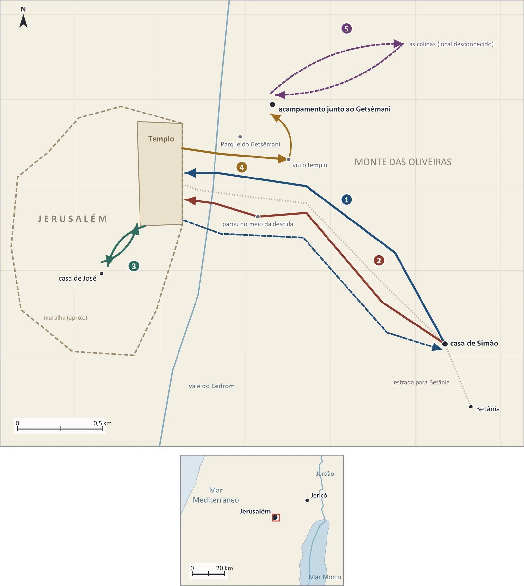
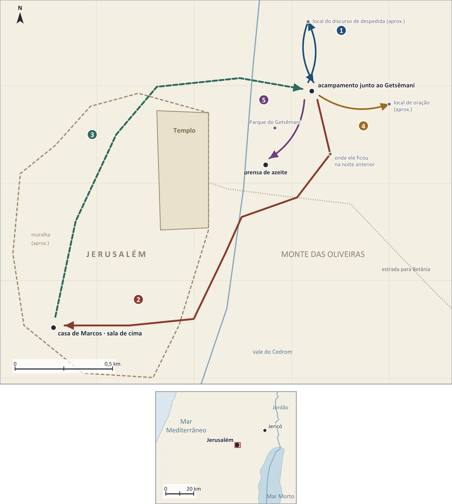
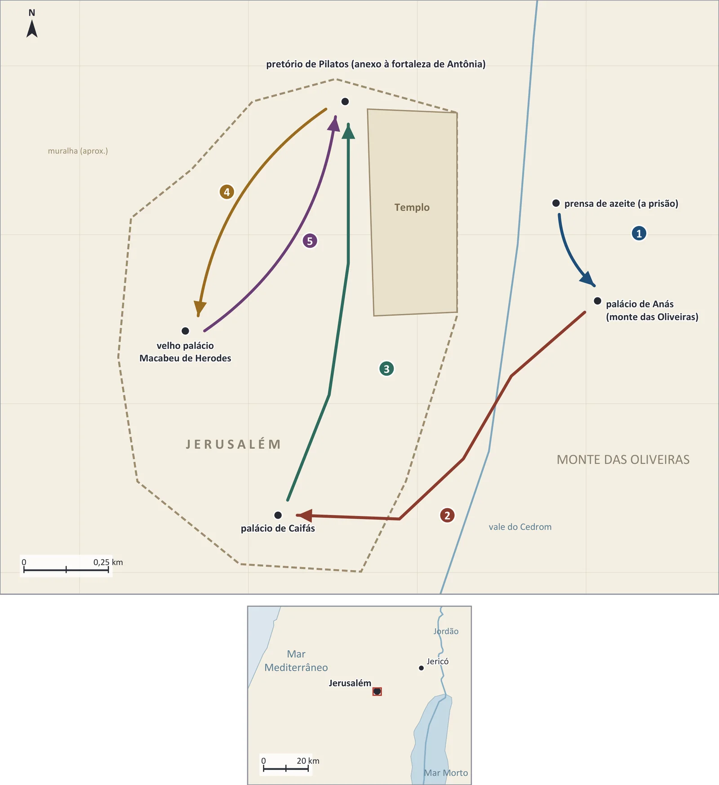
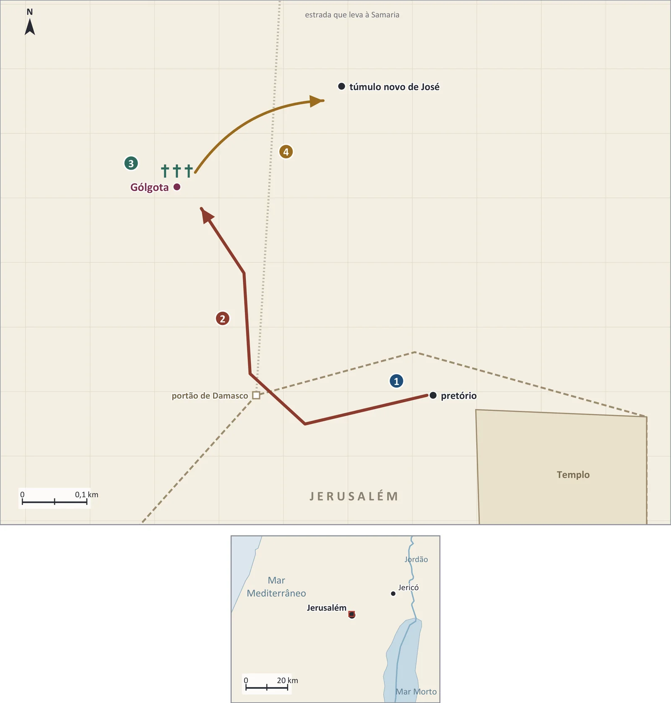

Parte VI Os acontecimentos que levam à prisão e à cruz
Documentos 171–188
Documento 171A Caminho de Jerusalémmarço de 30 d.C.
| Acontecimento | O Livro de Urântia | Bíblia |
|---|---|---|
| Preparativos para a partida para Jerusalém | 171:0.1–7 | Mt 20:20-28; Mc 10:35-45 |
| No dia seguinte ao sermão sobre o Reino, Jesus anunciou que subiria para a Páscoa em Jerusalém passando pelo sul da Peréia, e os seus seguidores supuseram que ele iria estabelecer o reino temporal. Naquele domingo à tarde, o pedido de Salomé em favor dos seus filhos irritou os apóstolos, e Jesus ensinou que quem quiser ser grande deve ser servidor. | ||
| O pedido de Salomé e dos filhos de Zebedeu | 171:0.4–7 | Mt 20:20-28; Mc 10:35-45 |
| No domingo à tarde, em Pela, Salomé veio com os seus filhos Tiago e João e pediu que eles se sentassem à direita e à esquerda de Jesus no reino que ele iria estabelecer em Jerusalém. Jesus disse que esses lugares cabe ao Pai decidir e ensinou os dez sobre o serviço. Naquela noite, graças aos esforços de Pedro, os dois irmãos desculparam-se.Difere da BíbliaMateus diz que a mãe fez o pedido e Marcos diz que foram os filhos, ao passo que em O Livro de Urântia Salomé vem com os seus filhos para pedir. O dito sobre o resgate está ausente, e acrescenta-se o pedido de desculpas pela mediação de Pedro. | ||
| 1. Partindo de Pela | 171:1.1–6 | Nenhum |
| Na manhã da segunda-feira, 13 de março, Jesus e os doze despediram-se definitivamente do acampamento de Pela e dirigiram-se para o sul da Peréia, seguidos por cerca de mil discípulos. Na quarta-feira, 15 de março, seguindo as instruções de André, Davi Zebedeu fechou o acampamento dos visitantes, vendeu o seu equipamento e mais tarde entregou o dinheiro a Judas Iscariotes. | ||
| 2. Sobre a Avaliação do Custo | 171:2.1–6 | Lc 14:25-35 |
| No vau de Betânia, no Jordão, os discípulos hesitaram ao saber que Jesus não ia diretamente a Jerusalém. Jesus subiu numa enorme pedra e pronunciou o discurso “Avaliando o Custo”, citando o homem que constrói uma torre e o rei que vai à guerra, e pediu dedicação até a própria vida. Cerca de quinhentos então o seguiram em direção a Hesbom.Difere da BíbliaO Evangelho de Lucas manda odiar pai, mãe, mulher, filhos e a própria vida, ao passo que O Livro de Urântia fala em estar disposto a abandoná-los, e situa o discurso sobre uma enorme pedra no vau do Jordão. | ||
| 3. A Campanha PereianaMapa 32-③ Campanha no sul da Peréia | 171:3.1–5 | Nenhum |
| Durante mais de duas semanas, Jesus e os doze visitaram as cidades do sul da Peréia onde trabalhavam os setenta. Em Hesbom, Jesus viu Abner pela última vez e disse-lhe que continuasse a obra. Embora os apóstolos soubessem que o sinédrio havia condenado Jesus, a ressurreição de Lázaro deixou-os numa expectativa tranqüila, em vez de medo. | ||
| 4. Ensinamento em Lívias | 171:4.1–9 | Mt 20:17-19; Mc 10:32-34; Lc 13:31-35; 18:31-34 |
| Na quarta-feira à noite, 29 de março, no acampamento de Lívias, Simão zelote e Simão Pedro receberam mais de cem espadas e distribuíram-nas. Na manhã seguinte, Jesus predisse de novo a sua morte e a sua ressurreição no terceiro dia, respondeu à advertência sobre Herodes e partiu para Jerusalém passando por Jericó. | ||
| Em Lívias, Jesus prediz de novo a sua morte | 171:4.2–3 | Mt 20:17-19; Mc 10:32-34; Lc 18:31-34 |
| Cedo na quinta-feira de manhã, em Lívias, Jesus mandou André acordar os apóstolos e advertiu-os a não confiarem nas defesas da carne. Disse que o Filho do Homem seria entregue aos principais sacerdotes e aos gentios, escarnecido e morto, mas ressuscitaria no terceiro dia. Cegos pelas esperanças de um reino temporal, eles não quiseram tomar as suas palavras ao pé da letra.Difere da BíbliaOs Evangelhos situam isso na estrada que sobe a Jerusalém, ao passo que O Livro de Urântia o situa em Lívias, na manhã seguinte à distribuição das espadas, e diz que os apóstolos entenderam o terceiro dia como uma figura de linguagem para um curto espaço de tempo. | ||
| A advertência sobre Herodes e a resposta de Jesus | 171:4.4–7 | Lc 13:31-35 |
| Em Lívias, logo depois do desjejum, fariseus amistosos advertiram Jesus a fugir porque Herodes procurava matá-lo. Jesus disse-lhes que dissessem àquela raposa que o Filho do Homem pregaria na Peréia hoje e iria para a Judéia amanhã, lamentou-se sobre Jerusalém, que mata os profetas, e disse que subiriam para a Páscoa.Difere da BíbliaO Evangelho de Lucas não indica o lugar, ao passo que O Livro de Urântia o situa em Lívias e explica que Herodes queria na realidade expulsar Jesus dos seus domínios, e não matá-lo; a expulsão de demônios e as curas tornam-se pregação. | ||
| 5. O Cego de JericóMapa 32-④ Por Jericó até Betânia | 171:5.1–3 | Mt 20:29-34; Mc 10:46-52; Lc 18:35-43 |
| No fim da tarde de quinta-feira, 30 de março, quando Jesus e cerca de duzentos seguidores se aproximavam da porta de Jericó, o velho mendigo Bartimeu, cego desde a juventude, clamou por ele. Repreendido, clamou ainda mais alto, e Jesus chamou-o e, vendo a sua fé, restituiu-lhe a vista. Bartimeu ficou perto de Jesus até que este partiu no dia seguinte.Difere da BíbliaO Evangelho de Mateus traz dois cegos quando Jesus saía de Jericó, ao passo que O Livro de Urântia fala só de Bartimeu, quando Jesus entrava na cidade, acrescentando que ele decidira buscar a cura depois de ouvir falar da cura do cego Josias em Jerusalém. | ||
| 6. A Visita a Zaqueu | 171:6.1–4 | Lc 19:1-10 |
| Ao entrar em Jericó perto do pôr do sol, Jesus chamou Zaqueu, o baixo dirigente dos publicanos que havia subido num sicômoro, e disse que ficaria na sua casa. Quando um fariseu objetou, Zaqueu prometeu dar metade dos seus bens aos pobres e devolver quatro vezes mais tudo o que houvesse tomado injustamente, e Jesus declarou que a salvação chegara a essa casa.Difere da BíbliaO Evangelho de Lucas diz que Zaqueu falou ao Senhor, ao passo que O Livro de Urântia diz que ele subiu numa cadeira e o declarou publicamente ao povo de Jericó, e que Jesus disse que ele se tornara verdadeiramente um filho de Abraão. | ||
| 7. “Enquanto Jesus Passava” | 171:7.1–10 | Nenhum |
| Jesus espalhava alegria por onde passava e nunca se apressava, confortando e ajudando as pessoas ao passar. Porque compreendia e amava verdadeiramente os homens, mostrava uma compaixão genuína, e a maior parte da sua obra importante aconteceu incidentalmente, ao longo do caminho. Os seus seguidores também devem aprender a fazer o bem no curso da vida diária. | ||
| 8. A Parábola das Minas | 171:8.1–15 | Lc 19:11-28 |
| Saindo de Jericó perto do meio-dia, Jesus parou para almoçar a meio caminho da estrada para Betânia e contou aos apóstolos a parábola das minas. Baseada na experiência de Arquelau, falava de um nobre rejeitado que confiou uma mina a cada um de doze servos e lhes pediu contas na sua volta. Mais tarde, Natanael ensinou o seu significado em quatro pontos.Difere da BíbliaO Evangelho de Lucas traz dez servos e termina com a execução dos inimigos do nobre, ao passo que O Livro de Urântia dá as minas a doze servos, os apóstolos, baseia a história em Arquelau e omite a execução dos inimigos. | ||
Documento 172A Entrada em Jerusalémmarço – abril de 30 d.C.
| Acontecimento | O Livro de Urântia | Bíblia |
|---|---|---|
| (Introdução) | 172:0.1–3 | Nenhum |
| Pouco depois das quatro horas da tarde de sexta-feira, 31 de março de 30 d.C., Jesus e os apóstolos chegaram a Betânia, e Jesus alojou-se com Simão, um crente da vizinhança. Os sacerdotes principais decidiram não prendê-lo entre os seus amigos, mas esperar até que ele entrasse em Jerusalém. Naquela noite os apóstolos, armados com espadas, guardaram-no em duplas. | ||
| 1. O Sábado em Betânia | 172:1.1–9 | Mt 26:6-13; Mc 14:3-9; Jo 11:55; 12:1-11 |
| Na noite de sábado, seis dias antes da Páscoa, o povo de Betânia e de Betfagé ofereceu um banquete na casa de Simão em honra de Jesus e de Lázaro. Maria derramou óleo de nardo sobre a cabeça e os pés de Jesus; Judas chamou isso de desperdício, mas Jesus defendeu-a dizendo que ela o preparava para o seu sepultamento. Judas resolveu vingar-se dessa repreensão.Difere da BíbliaMateus e Marcos situam o episódio na casa de Simão, o leproso, onde uma mulher unge a cabeça dele, ao passo que O Livro de Urântia faz Maria ungir a sua cabeça e os seus pés na casa de Simão, o crente da vizinhança. Ao contrário de João, não chama Judas de ladrão. | ||
| 2. No Domingo de Manhã com os Apóstolos | 172:2.1–5 | Nenhum |
| Na manhã de domingo, no jardim de Simão, Jesus deu aos doze as últimas instruções antes de entrar em Jerusalém, dizendo-lhes que não fizessem nenhum trabalho público durante a Páscoa e que ficassem perto dele, vigiando e orando. Depois aconselhou Lázaro a não perder a vida por causa da vingança do sinédrio. | ||
| 3. A Partida para JerusalémMapa 32-⑤ Entrada em Jerusalém, 2 de abril (detalhe) | 172:3.1–16 | Mt 21:1-11; Mc 11:1-10; Lc 19:29-44; Jo 12:12-19 |
| À uma e meia da tarde de domingo, Jesus fez a sua entrada pública em Jerusalém montado num jumento, de acordo com as palavras de Zacarias. Pedro e João trouxeram o jumento de Betfagé, e as multidões estenderam vestes e ramos, gritando hosanas. Do alto do monte das Oliveiras Jesus chorou sobre Jerusalém, e milhares saíram da cidade para ir ao seu encontro.Difere da BíbliaOs Evangelhos dizem que foram enviados dois discípulos sem nome, e Mateus menciona uma jumenta e um jumentinho, ao passo que O Livro de Urântia diz que Pedro e João trouxeram apenas o jumento e que a multidão que o acolheu resultou de Davi Zebedeu ter espalhado a notícia. | ||
| 4. A Visita ao Templo | 172:4.1–3 | Mc 12:41-44; Lc 21:1-4 |
| Enquanto os gêmeos Alfeus devolviam o jumento, Jesus e os dez apóstolos passearam pelo templo observando os preparativos da Páscoa. Ao entardecer, junto ao tesouro, Jesus viu uma viúva pobre lançar duas pequenas moedas e disse que ela dera mais do que todos os outros, pois dera tudo o que tinha para viver. Depois voltaram a Betânia para descansar.Difere da BíbliaMarcos e Lucas situam a oferta da viúva dias depois, enquanto Jesus ensinava no templo, ao passo que O Livro de Urântia a situa na tarde do domingo da entrada, quando observavam o templo. | ||
| 5. A Atitude dos Apóstolos | 172:5.1–13 | Nenhum |
| Voltando a Betânia na noite de domingo, os apóstolos estavam calados. Pedro e Tiago estavam desapontados por Jesus não ter proclamado o Reino; João e Mateus lembravam-se da profecia de Zacarias; Natanael e Tomé viam na entrada um meio de impedir a sua prisão. Judas, ferido pela zombaria de um amigo saduceu, já era um desertor no coração. | ||
Documento 173A Segunda-Feira en Jerusalémabril de 30 d.C.
| Acontecimento | O Livro de Urântia | Bíblia |
|---|---|---|
| Mapa 33De Betânia ao templo e ao acampamento do Getsêmani3–5 de abril de 30 d.C. | ||
| (Introdução)Mapa 33-① Segunda-feira, 3 de abril · de Betânia ao templo | 173:0.1–3 | Nenhum |
| Na segunda-feira de manhã cedo, Jesus e os apóstolos encontraram-se na casa de Simão, em Betânia, e partiram para Jerusalém. Os apóstolos estavam calados por causa da instrução de não fazer nenhum ensinamento público durante a semana da Páscoa, e Judas pensava em como se retirar. Por volta das nove horas, Jesus subiu a uma plataforma no grande pátio do templo e começou a ensinar. | ||
| 1. A Purificação do Templo | 173:1.1–11 | Mt 21:12-17; Mc 11:15-19; Lc 19:45-48; Jo 2:13-17 |
| A venda de animais para o sacrifício e o câmbio de dinheiro nos pátios do templo traziam lucros enormes à família do sumo sacerdote. Na segunda-feira de manhã, Jesus tomou de um rapaz um chicote de cordas e expulsou os animais, os peregrinos viraram as mesas dos cambistas e, em cinco minutos, todo o comércio foi varrido. O pátio ficou tranqüilo enquanto Jesus ensinava o dia inteiro.Difere da BíbliaO Evangelho de João situa a purificação no início do ministério, ao passo que O Livro de Urântia a coloca na segunda-feira da última semana; e, enquanto os Evangelhos dizem que Jesus virou as mesas, O Livro de Urântia diz que foram os peregrinos. | ||
| 2. Desafiando a Autoridade do Mestre | 173:2.1–8 | Mt 21:23-27; Mc 11:27-33; Lc 20:1-8 |
| Na sua reunião do meio-dia, o sinédrio resolveu destruir Jesus e designou cinco grupos para armar-lhe ciladas. Por volta das duas horas, os anciães de Israel perguntaram com que autoridade ele fazia essas coisas. Jesus perguntou se o batismo de João era do céu ou dos homens e, quando eles disseram que não sabiam, recusou-se a responder.Difere da BíbliaOs Evangelhos dizem que foram os sacerdotes principais, os escribas e os anciães que perguntaram, ao passo que O Livro de Urântia diz que foi o grupo dos anciães, um dos cinco designados pelo sinédrio, e explica que Jesus não apoiou a sua autoridade em João. | ||
| 3. Parábola dos Dois Filhos | 173:3.1–4 | Mt 21:28-32 |
| Aos fariseus calados, Jesus falou de dois filhos. Um recusou-se a trabalhar na vinha, mas depois se arrependeu e foi; o filho mais velho prometeu ir, mas não foi. Disse que o primeiro fez a vontade do pai, e que os publicanos e as meretrizes entrariam no Reino antes deles. Os apóstolos não tomaram parte nesses diálogos.Difere da BíbliaEm Mateus o filho mais velho diz que irá e não vai, e o segundo se arrepende e vai; O Livro de Urântia inverte a ordem, de modo que o filho a quem o pai se dirige primeiro recusa e depois vai, e o filho mais velho deixa de ir. | ||
| 4. Parábola do Proprietário Ausente | 173:4.1–5 | Mt 21:33-46; Mc 12:1-12; Lc 20:9-19 |
| Jesus falou à multidão de um proprietário que arrendou a sua vinha a lavradores e partiu para um país distante. Os lavradores mataram os seus servos e o seu administrador e, por fim, o seu filho. Citando a pedra que os construtores rejeitaram e que se tornou a pedra angular, advertiu que o Reino seria tirado daqueles que o rejeitam. Naquela noite saduceus e fariseus uniram forças.Difere da BíbliaOs Evangelhos enviam o filho logo depois dos servos, ao passo que O Livro de Urântia acrescenta a etapa do envio e da morte do administrador, o servo de maior confiança. O dito de que quem cair sobre a pedra, embora despedaçado, será salvo não está na Bíblia. | ||
| 5. Parábola da Festa de Casamento | 173:5.1–6 | Mt 22:1-14 |
| Jesus falou de um rei cujos convidados recusaram a festa de casamento do seu filho e mataram os seus mensageiros; o rei destruiu-os e chamou todos os que encontrou pelos caminhos. Um convidado que não quis vestir a veste nupcial oferecida gratuitamente foi lançado fora. Por volta das quatro horas, voltando a Betânia, Jesus mandou que se montasse um acampamento perto do Getsêmani.Difere da BíbliaO Evangelho de Mateus amarra o homem sem a veste e lança-o nas trevas exteriores, acrescentando que poucos são escolhidos, ao passo que O Livro de Urântia diz que o rei fornecia as vestes gratuitamente e que o homem foi simplesmente lançado fora. | ||
| “Destruí este templo, e em três dias …” | 173:5.4 | Jo 2:18-22 |
| Depois da parábola, um crente simpatizante pediu um sinal para saber que Jesus era o Filho de Deus. Apontando para o próprio corpo, Jesus disse: “Destruí este templo, e em três dias eu o levantarei”. Nem o povo nem os apóstolos compreenderam, e só depois da sua ressurreição eles se lembraram dessas palavras.Difere da BíbliaO Evangelho de João situa isso no início do ministério, depois da purificação do templo, em resposta à exigência de um sinal pelos judeus, com quarenta e seis anos de construção, ao passo que O Livro de Urântia faz Jesus responder a um crente na última semana e fala de quase cinqüenta anos. | ||
Mapa 33De Betânia ao templo e ao acampamento do Getsêmani
3–5 de abril de 30 d.C. · Documentos 173–177

- ①Segunda-feira, 3 de abril · de Betânia ao temploDe manhã cedo reuniram-se na casa de Simão, desceram o monte das Oliveiras e chegaram ao templo por volta das nove horas; Jesus ensinou no grande pátio, e o templo foi purificado. Por volta das quatro horas voltaram a Betânia (tracejado), e ele mandou que se estabelecesse um acampamento mais perto da cidade. [173:0.1–3; 173:1; 173:5.5]
- ②Terça-feira, 4 de abril, de manhã · de volta ao pátio do temploPor volta das sete horas despediu-se na casa de Simão. Indo para Jerusalém com quatro apóstolos, deteve-se por mais de uma hora mais ou menos a meio caminho da descida do monte das Oliveiras e depois ensinou no pátio do templo. [174:0.1–3; 174:2.2]
- ③Meio-dia · a casa de JoséRecebeu os gregos e falou durante o almoço; depois conduziu-os pelas ruas estreitas de volta ao templo e, pouco depois das duas horas, começou o seu último discurso no templo. [174:5.2; 174:5.14; 175:0.1]
- ④Terça-feira à noite · para o acampamento perto do GetsêmaniSaindo do templo, subiram um pouco a encosta ocidental do monte das Oliveiras; contemplando o templo ao pôr do sol, Jesus falou da sua destruição, e seguiram para o novo acampamento, um pouco acima do acampamento público. [176:0.1–2; 176:2.9]
- ⑤Quarta-feira, 5 de abril · um dia nas colinasUm dia de descanso. Jesus passou o dia inteiro sozinho nas colinas com João Marcos e voltou ao acampamento depois do pôr do sol. O lugar nas colinas não é indicado no texto. [177:0.1–4; 177:1.3–5]
Documento 174Terça-Feira de Manhã no Temploabril de 30 d.C.
| Acontecimento | O Livro de Urântia | Bíblia |
|---|---|---|
| Saudações pessoaisMapa 33-② Terça-feira, 4 de abril, de manhã · de volta ao pátio do templo | 174:0.1–3 | Nenhum |
| Por volta das sete horas da manhã de terça-feira, Jesus encontrou-se com os apóstolos, o corpo de mulheres e umas duas dúzias de discípulos na casa de Simão. Deu a Lázaro a instrução que o levou a fugir para a Filadélfia e deu ao corpo de mulheres os seus conselhos de despedida. Depois de uma palavra pessoal a cada um dos doze, partiu para Jerusalém com André, Pedro, Tiago e João. | ||
| 1. O Perdão Divino | 174:1.1–5 | Nenhum |
| Descendo o monte das Oliveiras, Pedro perguntou quem tinha razão: Tiago, que dizia que o Pai perdoa antes que peçamos, ou ele próprio, que sustentava que o arrependimento vem primeiro. Jesus ensinou que Deus, como um pai sábio, compreende os seus filhos, de modo que o perdão é inevitável; o pecado é uma experiência da consciência da criatura, e quem ama os seus irmãos já os perdoou. | ||
| 2. Perguntas dos Dirigentes Judeus | 174:2.1–5 | Mt 22:15-22; Mc 12:13-17; Lc 20:20-26 |
| Na noite de segunda-feira, cerca de cinqüenta líderes concordaram em desacreditar Jesus publicamente. Na terça-feira de manhã, jovens estudantes bem ensaiados, junto com herodianos, perguntaram se era lícito pagar tributo a César. Jesus fez com que lhe mostrassem um denário com a imagem de César e respondeu: “Dai a César as coisas que são de César, e dai a Deus as coisas que são de Deus”.Difere da BíbliaMateus diz que os fariseus enviaram os seus discípulos, ao passo que O Livro de Urântia diz que vieram jovens estudantes bem ensaiados, e explica a resposta pela regra do sinédrio segundo a qual o direito de cunhar moeda trazia consigo o direito de cobrar impostos. | ||
| 3. Os Saduceus e a Ressurreição | 174:3.1–5 | Mt 22:23-33; Mc 12:18-27; Lc 20:27-40 |
| Um grupo de saduceus perguntou de quem seria esposa, na ressurreição, uma mulher casada sucessivamente com sete irmãos. Jesus respondeu que os ressuscitados nem se casam nem são dados em casamento, mas são como os anjos, e que o Pai, o Deus de Abraão, de Isaque e de Jacó, é o Deus dos vivos. Alguns fariseus exclamaram que ele havia respondido bem.Difere da BíbliaOs Evangelhos dão apenas a resposta, ao passo que O Livro de Urântia explica que Jesus citou apenas Moisés aos saduceus, que aceitavam somente os livros de Moisés, e que ele não endossou a crença dos fariseus numa ressurreição corporal literal. | ||
| 4. O Grande Mandamento | 174:4.1–7 | Mt 22:34-46; Mc 12:28-37; Lc 20:41-44 |
| Um jurista dos fariseus perguntou qual era o maior mandamento. Jesus indicou amar a Deus de todo o coração, alma, mente e força, e amar o próximo como a si mesmo. Disse ao jurista que ele não estava longe do Reino, e naquela noite o jurista foi batizado. Perto do meio-dia, Jesus perguntou como o Libertador podia ser filho de Davi.Difere da BíbliaMateus diz apenas que o jurista perguntou para pô-lo à prova, ao passo que O Livro de Urântia diz que ele foi elogiado, professou a sua fé naquela noite no acampamento e foi batizado por Josias, e faz Jesus falar de um só mandamento. | ||
| 5. Os Gregos IndagadoresMapa 33-③ Meio-dia · a casa de José | 174:5.1–14 | Jo 12:20-36 |
| Por volta do meio-dia de terça-feira, gregos crentes de Alexandria, Atenas e Roma pediram a Filipe para ver Jesus, e Filipe e André levaram-nos a um almoço na casa de José. Jesus falou do grão de trigo e orou: “Pai, glorificado seja o vosso nome”, e o Ajustador Personalizado apareceu e respondeu.Difere da BíbliaO Evangelho de João diz que veio uma voz do céu e que a multidão pensou ser um trovão ou um anjo, ao passo que O Livro de Urântia diz que quem falou foi o Ajustador Personalizado, que os presentes não ouviram a voz e que a cena foi um almoço na casa de José. | ||
Documento 175O Último Discurso no Temploabril de 30 d.C.
| Acontecimento | O Livro de Urântia | Bíblia |
|---|---|---|
| (Introdução) | 175:0.1–2 | Nenhum |
| Pouco depois das duas horas da tarde de terça-feira, Jesus chegou ao templo com onze apóstolos, José de Arimatéia, os trinta gregos e alguns discípulos, e começou o seu último discurso. Os cambistas não haviam voltado, de modo que o pátio estava tranqüilo. Esse discurso foi o seu último apelo ao povo judeu e a acusação final contra os seus líderes. | ||
| 1. O Discurso | 175:1.1–25 | Mt 23:1-39; Mc 12:38-40; Lc 20:45-47 |
| Nos pátios do templo, Jesus ofereceu uma última oportunidade de arrependimento aos líderes que haviam rejeitado a misericórdia do Pai, e disse ao povo que seguisse as palavras dos escribas, mas não as suas obras. Pronunciou ais contra os hipócritas, lamentou que os teria reunido como a galinha reúne os seus pintinhos, disse que a casa deles ficava deserta e saiu do templo.Difere da BíbliaO Evangelho de Mateus termina dizendo que não o veriam até que bendissessem aquele que vem em nome do Senhor, ao passo que O Livro de Urântia faz Jesus dizer que não ensinará mais no templo e acrescenta que ele ainda oferece misericórdia. | ||
| 2. A Condição Individual dos Judeus | 175:2.1–3 | Nenhum |
| A rejeição de Jesus e a conspiração para a sua morte pelos líderes judeus em nada afetam a posição de qualquer judeu individual diante de Deus. O próprio Jesus era judeu, e os primeiros mártires do evangelho foram judeus; os reveladores advertem que a perseguição aos judeus por cristãos professos jamais pode ser justificada. | ||
| 3. A Fatídica Reunião do Sinédrio | 175:3.1–3 | Nenhum |
| Às oito horas da noite de terça-feira o sinédrio reuniu-se e, pouco antes da meia-noite de 4 de abril de 30 d.C., votou por unanimidade impor a sentença de morte tanto a Jesus quanto a Lázaro. Isso marcou a rejeição da aliança divina. Os oficiais receberam ordem de prender Jesus em segredo, não em público, e trazê-lo antes da meia-noite de quinta-feira. | ||
| 4. A Situação em Jerusalém | 175:4.1–15 | Nenhum |
| Judas perdeu a primeira metade do discurso enquanto consultava parentes saduceus sobre a sua deserção, e a denúncia confirmou a sua decisão de abandonar o evangelho. Naquela noite mais de trinta crentes secretos reuniram-se na casa de Nicodemos e combinaram reconhecer abertamente o Mestre na hora em que ele fosse preso. O sinédrio marcou a sua reunião seguinte na casa de Caifás. | ||
Documento 176Terça-Feira à Noite no Monte das Oliveirasabril de 30 d.C.
| Acontecimento | O Livro de Urântia | Bíblia |
|---|---|---|
| A destruição do templo preditaMapa 33-④ Terça-feira à noite · para o acampamento perto do Getsêmani | 176:0.1–2 | Mt 24:1-2; Mc 13:1-2; Lc 21:5-6 |
| Ao saírem do templo na terça-feira à tarde, Mateus chamou a atenção para as suas pedras maciças e os seus adornos, e Jesus disse que não ficaria pedra sobre pedra. O grupo subiu o monte das Oliveiras e sentou-se a contemplar o templo resplandecendo ao pôr do sol e sob a lua cheia, e Natanael perguntou como saberiam quando essas coisas aconteceriam.Difere da BíbliaOs Evangelhos dizem que os discípulos, um deles ou algumas pessoas apontaram para os edifícios, ao passo que O Livro de Urântia nomeia Mateus e diz que foi Natanael quem perguntou pelo tempo. | ||
| 1. A Destruição de Jerusalém | 176:1.1–7 | Mt 24:3-28; Mc 13:3-23; Lc 21:7-24 |
| No monte das Oliveiras Jesus disse-lhes que não temessem falsos libertadores, guerras ou perseguições, e que fugissem para as colinas quando os exércitos romanos cercassem Jerusalém. Atendendo a essa advertência, os crentes fugiram para Pela quando os exércitos romanos apareceram pela primeira vez. Quando Pedro perguntou sobre o seu retorno, Jesus repreendeu-o por tentar ligar o novo ensinamento ao antigo.Difere da BíbliaOs Evangelhos ligam essas palavras aos sinais do fim do mundo, à segunda vinda e à abominação da desolação, ao passo que O Livro de Urântia as trata como instruções práticas para fugir da destruição de Jerusalém e acrescenta que os crentes escaparam para Pela. | ||
| 2. A Segunda Vinda do Mestre | 176:2.1–9 | Mt 24:29-44; Mc 13:24-37; Lc 21:25-36 |
| Jesus pôs de lado a expectativa de que o Filho do Homem se sentaria no trono de Davi, prometendo estar com eles por meio do Espírito da Verdade e voltar um dia a este mundo. O momento só é conhecido nos conselhos do Paraíso, e cada pessoa encontra o julgamento e uma nova dispensação individualmente, ao passar pelos portais da morte.Difere da BíbliaOs Evangelhos falam do sol e da lua escurecidos e do Filho do Homem vindo sobre as nuvens, ao passo que O Livro de Urântia diz que um apocalipse judeu escrito por um certo Selta foi copiado aqui em Mateus, e fala apenas de um retorno em poder e em espírito. | ||
| 3. A Conversa Posterior no Campo | 176:3.1–10 | Mt 25:14-30 |
| Junto à fogueira, Tomé perguntou como deveriam conduzir-se enquanto o Mestre estivesse ausente. Jesus disse que a relação deles com o Reino é espiritual e pessoal, de modo que a queda das nações e o fim de uma era não podem abalar um crente. Cada geração deve trabalhar tendo em mente o seu retorno, como acontece com a morte, e a fé viva deve produzir os frutos do espírito.Difere da BíbliaOs Evangelhos situam essa parábola dentro do discurso do monte das Oliveiras, ao passo que O Livro de Urântia faz Jesus contá-la naquela noite, junto à fogueira perto do Getsêmani, a umas vinte pessoas, em resposta à pergunta de Tomé. | ||
| A parábola dos talentos | 176:3.4–9 | Mt 25:14-30 |
| Um homem que partia para um país distante confiou aos seus servos cinco, dois e um talento, segundo a capacidade de cada um. Dois dobraram os seus talentos, mas o que recebera um talento escondeu-o na terra e perdeu até mesmo esse. Jesus e os reveladores explicam que simplesmente preservar a verdade em formas fixas é também uma administração infrutífera.Difere da BíbliaO Evangelho de Mateus termina lançando o servo inútil nas trevas exteriores, onde haverá choro e ranger de dentes, ao passo que O Livro de Urântia pára quando lhe é tirado o talento e acrescenta que simplesmente preservar a verdade é também preguiça. | ||
| 4. O Retorno de Michael | 176:4.1–7 | Nenhum |
| Além de prometer o Espírito da Verdade, Jesus prometeu voltar pessoalmente a este mundo um dia, mas não disse como, onde ou quando. Os reveladores pensam que Michael pode voltar mais de uma vez, mas não sabem quando, e exortam os crentes a não ligar o seu retorno a acontecimentos determinados, mas a estar sempre prontos. | ||
Documento 177Quarta-Feira, O Dia de Descansoabril de 30 d.C.
| Acontecimento | O Livro de Urântia | Bíblia |
|---|---|---|
| (Introdução)Mapa 33-⑤ Quarta-feira, 5 de abril · um dia nas colinas | 177:0.1–4 | Nenhum |
| Na quarta-feira de manhã, Jesus disse aos apóstolos que descansassem e meditassem, e disse a André que estaria fora durante o dia e que ninguém devia entrar pelas portas de Jerusalém. Recusou a oferta de Davi Zebedeu de três guardas armados, dizendo que desejava comungar a sós com o Pai, e João Marcos apresentou-se com uma cesta de almoço. | ||
| 1. Um Dia a Sós com Deus | 177:1.1–6 | Nenhum |
| Quando João Marcos segurou a cesta e pediu para ir junto, Jesus levou-o para as colinas, onde passaram o último dia tranqüilo do Mestre na Terra até depois do pôr do sol. Jesus assegurou ao jovem que ele sobreviveria para tornar-se um poderoso mensageiro do Reino e encarregou-o de não contar a ninguém o que havia ouvido. | ||
| 2. A Infância no Lar | 177:2.1–7 | Nenhum |
| Comparando as suas infâncias com João Marcos, Jesus disse que João se mostraria leal porque fora criado por pais amorosos e sábios, ao contrário do seu amigo Amós, cujos pais, excessivamente apegados, não o haviam deixado vir. Como a criança forma o seu conceito do Pai celeste a partir do seu pai terreno, a vida no lar na primeira infância molda toda a vida. | ||
| 3. O Dia no Acampamento | 177:3.1–8 | Nenhum |
| Os apóstolos passaram o dia visitando os discípulos no monte das Oliveiras enquanto esperavam Jesus, e Natanael falou sobre o desejo supremo. Davi Zebedeu recebeu a notícia de que a família de Jesus estava vindo para Jerusalém, mas guardou segredo. Mais de vinte gregos vieram ao acampamento e conferenciaram com Pedro e João, e os líderes ficaram surpresos por Jesus não aparecer. | ||
| 4. Judas e os Sacerdotes Principais | 177:4.1–12 | Mt 26:1-5, 14-16; Mc 14:1-2, 10-11; Lc 22:1-6 |
| Na quarta-feira, ignorando o pedido do Mestre, Judas foi a uma reunião informal do sinédrio na casa de Caifás, apresentado pelo seu primo, e perguntou o que lhe dariam para entregar Jesus discretamente. Caifás prometeu uma recompensa depois da entrega, e Judas combinou com o capitão dos guardas uma prisão na quinta-feira à noite. O seu motivo não era o dinheiro, mas a autoglorificação e a vingança.Difere da BíbliaO Evangelho de Mateus diz que lhe pesaram trinta moedas de prata, e Lucas diz que Satanás entrou em Judas, ao passo que O Livro de Urântia adia a recompensa para depois da traição e atribui o seu motivo à autoglorificação e ao ressentimento acumulado, e não ao dinheiro. | ||
| 5. A Última Hora de Reunião Social | 177:5.1–6 | Nenhum |
| Na hora social da quarta-feira à noite no acampamento, Jesus procurou animar os apóstolos abatidos, perguntou pelas suas famílias e advertiu-os a não confiar no apoio de multidões de fé superficial, mas a vigiar e orar. Espalhou-se a notícia de que Lázaro havia fugido de Betânia, e esse foi o ponto espiritual mais baixo dos apóstolos antes da morte de Jesus. | ||
Documento 178O Último Dia no Acampamentoabril de 30 d.C.
| Acontecimento | O Livro de Urântia | Bíblia |
|---|---|---|
| Mapa 34O acampamento do Getsêmani e a sala de cimaQuinta-feira, 6 de abril de 30 d.C. | ||
| (Introdução)Mapa 34-① Manhã · o discurso de despedida | 178:0.1 | Nenhum |
| Depois do desjejum de quinta-feira, Jesus conduziu os apóstolos e os discípulos judeus e gentios a um lugar retirado acima do acampamento e fez o seu discurso de despedida a todo o grupo do acampamento. Judas estava ausente; alguns pensaram que ele fora enviado à cidade para preparar a Páscoa, e ele só voltou ao acampamento no meio da tarde. | ||
| 1. Discurso sobre Filiação e Cidadania | 178:1.1–18 | Nenhum |
| Na manhã de quinta-feira, Jesus ensinou cerca de cinqüenta seguidores de confiança durante quase duas horas sobre a relação do Reino do céu com os reinos deste mundo e da filiação com a cidadania. Os crentes devem dar a César e a Deus o que lhes é devido, nunca difundir a verdade pelo poder secular e, como cidadãos melhores, levar o evangelho como uma semente viva. | ||
| 2. Após a Refeição do Meio-diaMapa 34-② Quatro e meia · para a sala de cima | 178:2.1–12 | Mt 26:17-19; Mc 14:12-16; Lc 22:7-13 |
| Ao meio-dia todos sabiam da fuga de Lázaro. Quando Davi Zebedeu perguntou se Jesus sabia da trama de Judas, Jesus disse que sabia de tudo e mandou-o nada dizer. Enviou Pedro, João e Filipe para seguir um homem que carregava um cântaro de água até a sala de cima da casa de João Marcos, e Judas entregou a Davi todos os fundos apostólicos.Difere da BíbliaOs Evangelhos dizem que os discípulos foram enviados para preparar a Páscoa, ao passo que O Livro de Urântia diz que se tratava de uma ceia na véspera da Páscoa, combinada por Jesus com João Marcos no dia anterior, e identifica o lugar como a casa de João Marcos. | ||
| 3. A Caminho da Ceia | 178:3.1–6 | Nenhum |
| Perto do pôr do sol de quinta-feira, Jesus e os doze atravessaram o alto ocidental do monte das Oliveiras em direção à cidade e detiveram-se onde ele havia falado na tarde anterior. Ele disse que, assim como o Pai o enviara, ele os enviaria, e advertiu-os a não se porem em perigo defendendo o Filho do Homem. Depois do pôr do sol seguiram para a casa de João Marcos. | ||
Mapa 34O acampamento do Getsêmani e a sala de cima
Quinta-feira, 6 de abril de 30 d.C. · Documentos 178–183

- ①Manhã · o discurso de despedidaLogo depois do desjejum, conduziu-os a um lugar retirado, um pouco acima do acampamento, e fez o seu discurso de despedida aos apóstolos e aos discípulos escolhidos; perto de uma hora voltaram ao acampamento. [178:0.1; 178:1.18]
- ②Quatro e meia · para a sala de cimaPelo alto ocidental do monte das Oliveiras até a estrada que vinha de Betânia; detiveram-se onde ele se demorara na tarde anterior, esperaram até o pôr do sol, desceram à cidade e comeram a Última Ceia na sala de cima da casa de Marcos. As ruas da cidade são aproximadas. [178:2.12; 178:3.1–6; 179:0.4]
- ③Por volta das dez horas · de volta ao acampamentoConduziu os onze apóstolos através da cidade, passando o riacho Cedrom, até o seu acampamento junto ao parque do Getsêmani. Judas já havia partido. [182:0.1–2]
- ④Oração na ravina próximaQuando o acampamento ficou em silêncio, levou Pedro, Tiago e João um pouco acima, numa ravina próxima aonde muitas vezes ia orar. [182:3.1]
- ⑤A prensa de azeiteDeixando os seus seguidores, desceu até a prensa de azeite perto da entrada do parque do Getsêmani e sentou-se ali sozinho, esperando o traidor (a prisão está no Mapa 35). [183:0.3–5]
Documento 179A Última Ceiaabril de 30 d.C.
| Acontecimento | O Livro de Urântia | Bíblia |
|---|---|---|
| (Introdução) | 179:0.1–5 | Nenhum |
| Quando Filipe perguntou sobre a Páscoa, referia-se à ceia que cairia na sexta-feira à noite, mas Jesus realizou a sua ceia um dia antes, na quinta-feira à noite, e os apóstolos não entenderam por quê. Como Jesus nunca providenciara um cordeiro quando agia como anfitrião, não se surpreenderam por não ser servido nenhum. Os pais de João Marcos receberam-nos, e eles subiram à sala de cima. | ||
| 1. O Desejo de Ter Preferência | 179:1.1–8 | Nenhum |
| Logo depois da porta da sala de cima havia cântaros de água e bacias para lavar os pés, mas nenhum servo, e nenhum dos apóstolos quis fazer o papel de servo. Judas tomou o lugar de honra à esquerda do anfitrião e João o da direita, de modo que Pedro, irritado, tomou o assento mais baixo. Jesus entrou em meio à disputa e tomou o seu lugar em silêncio, com ar desapontado. | ||
| 2. Começando a Ceia | 179:2.1–3 | Mt 26:20; Mc 14:17; Lc 22:14-18 |
| Sentado, Jesus sorriu e disse que desejara muito comer esta Páscoa com eles antes de sofrer. Tomou o cálice das mãos de Tadeu, deu graças e fez com que o partilhassem, dizendo que não beberia mais com eles até que se sentassem juntos no Reino vindouro. Ele conhecia a intenção de Judas, mas preocupava-se apenas com a segurança dos seus seguidores.Difere da BíbliaO Evangelho de Lucas apresenta essa refeição como a Páscoa, ao passo que O Livro de Urântia faz dela uma ceia sem cordeiro na quinta-feira à noite, um dia antes da Páscoa, e diz que Tadeu passou o cálice a Jesus. | ||
| 3. Lavando os Pés dos Apóstolos | 179:3.1–10 | Lc 22:24-30; Jo 13:1-20 |
| Depois do primeiro cálice, Jesus tirou o seu manto externo, cingiu-se com uma toalha e ajoelhou-se diante de Pedro, no assento mais baixo. Pedro primeiro recusou e depois pediu que lhe lavasse também as mãos e a cabeça. Jesus lavou os pés de todos os doze, inclusive de Judas, repreendeu a sua disputa por lugares e ensinou que quem quiser ser o primeiro deve ser como aquele que serve.Difere da BíbliaO Evangelho de João situa o lava-pés durante a ceia e diz que o diabo havia posto a idéia no coração de Judas, ao passo que O Livro de Urântia o coloca depois do primeiro cálice, como uma parábola encenada para apóstolos que se recusavam a lavar os pés uns dos outros e disputavam os lugares. | ||
| 4. Últimas Palavras ao Traidor | 179:4.1–8 | Mt 26:21-25; Mc 14:18-21; Lc 22:21-23; Jo 13:21-30 |
| No meio do segundo prato, Jesus explicou por que comia esta ceia um dia antes e disse que a sua ida para o Pai era necessária, mas não que um deles se tornasse traidor. Quando Judas perguntou: “Serei eu?”, Jesus deu-lhe o pão molhado e disse: “Tu o disseste”. Mandado agir depressa, Judas saiu para a noite.Difere da BíbliaOs Evangelhos dizem que o Filho do Homem vai conforme está escrito, e João diz que Satanás entrou em Judas depois do bocado, ao passo que O Livro de Urântia diz que a traição não era necessária à vontade do Pai, mas foi o fruto do mal escondido no coração de Judas. | ||
| 5. Instituindo a Ceia da Lembrança | 179:5.1–10 | Mt 26:26-30; Mc 14:22-26; Lc 22:19-20 |
| Jesus tomou o terceiro cálice, o cálice da bênção, e chamou-o o cálice da bênção de uma nova dispensação e o emblema da outorga do Espírito da Verdade. Depois partiu o pão, chamando-o o pão da vida. Instituiu a ceia da lembrança com símbolos, para evitar formas que prendessem, e eles terminaram cantando o salmo cento e dezoito.Difere da BíbliaOs Evangelhos dão primeiro o pão como o seu corpo e o cálice como o sangue da aliança derramado para remissão dos pecados, ao passo que O Livro de Urântia coloca primeiro o cálice, como emblema do Espírito da Verdade, e chama o pão de pão da vida. | ||
Documento 180O Discurso de Despedidaabril de 30 d.C.
| Acontecimento | O Livro de Urântia | Bíblia |
|---|---|---|
| O começo do discurso de despedida | 180:0.1–3 | Lc 22:35-36; Jo 13:31-33 |
| Depois da ceia e do salmo, Jesus fez os apóstolos sentarem-se de novo e disse-lhes que já não poderiam sair sem bolsa, como antes, mas deveriam agora prover a si mesmos. Chegara a hora de o Filho do Homem ser glorificado; ele ia para onde eles ainda não podiam ir, mas, quando a obra deles estivesse terminada, viriam até ele.Difere da BíbliaO Evangelho de Lucas diz que quem não tem espada venda o seu manto e compre uma, ao passo que O Livro de Urântia nada diz de espada e diz apenas que quem tem bolsa deve levá-la consigo. | ||
| 1. O Novo Mandamento | 180:1.1–6 | Jo 13:34-35 |
| Indo além do mandamento de amar o próximo como a si mesmo, Jesus deu o novo mandamento de amarem-se uns aos outros como ele os havia amado. Não existe amor maior do que dar a vida pelos amigos, e ele chamou os apóstolos de amigos, não de servos. Os reveladores acrescentam que Jesus não pede sacrifício, mas lealdade.Difere da BíbliaO capítulo 13 de João dá apenas o breve novo mandamento, ao passo que O Livro de Urântia continua aqui com o amor maior de dar a vida pelos amigos e com o chamado de amigos em vez de servos, que a Bíblia coloca no capítulo 15. | ||
| 2. A Vinha e os Ramos | 180:2.1–7 | Jo 15:1-17 |
| Jesus ensina que ele é a videira verdadeira, o Pai o lavrador e os apóstolos os ramos; permanecendo nele, produzem muitos frutos de serviço amoroso. Os reveladores apontam o mal-entendido posterior que tratou a oração em nome de Jesus como magia, e explicam a oração como a experiência de reconhecer e fazer a vontade do Pai.Difere da BíbliaO Evangelho de João diz que pedireis o que quiserdes e vos será feito, ao passo que O Livro de Urântia diz que se peça o que o espírito deseja, observa que esse dito foi mal registrado e mal compreendido e omite a queima dos ramos. | ||
| 3. A Inimizade do Mundo | 180:3.1–10 | Jo 15:18-27 |
| Jesus disse-lhes que não desanimassem com o ódio e a perseguição do mundo, já que este o odiara primeiro, e prometeu enviar um espírito auxiliador depois da sua partida. No universo do Pai há muitas moradas, e ele os receberia ali. A Tomé disse: “eu sou o caminho, a verdade e a vida”, e a Filipe, que quem o viu viu o Pai.Difere da BíbliaO capítulo 15 de João fala do ódio do mundo e do testemunho do Consolador, ao passo que O Livro de Urântia junta aqui as muitas moradas e as respostas a Tomé e a Filipe, que a Bíblia coloca no capítulo 14, explicando as moradas como os mundos de luz do Pai. | ||
| 4. O Ajudante Prometido | 180:4.1–6 | Jo 14:15-26 |
| Jesus disse que, depois de ir para o Pai e receber a soberania final, derramaria o Espírito da Verdade sobre toda a carne, deixando a carne para estar com eles mais plenamente em espírito. Quando Judas Alfeus perguntou como o reconheceriam se ele viesse apenas em espírito, Jesus respondeu que o Espírito da Verdade viveria no coração de cada um.Difere da BíbliaO Evangelho de João diz que o Pai dá o Consolador, ao passo que O Livro de Urântia diz que Jesus envia o Espírito da Verdade com a aprovação do Pai, e que esse espírito é o seu próprio, semelhante a ele, exceto pelo corpo material. | ||
| 5. O Espírito da Verdade | 180:5.1–12 | Jo 14:16-17; 15:26; 16:7-15 |
| Os reveladores explicam que o auxiliador prometido, o Espírito da Verdade, não é a letra ou a lei da verdade, mas a convicção viva dos verdadeiros significados nos níveis espirituais reais. A verdade não pode ser encerrada em fórmulas ou credos, e mesmo a regra de ouro e a não-resistência só são bem compreendidas por meio da interpretação viva do Espírito da Verdade.Difere da BíbliaO Evangelho de João diz que o Consolador convencerá o mundo do pecado, da justiça e do juízo, ao passo que O Livro de Urântia não traz esse dito e explica o Espírito da Verdade como a convicção crescente da verdade no interior do crente. | ||
| 6. A Necessidade de Partir | 180:6.1–9 | Jo 16:5-7, 16-28 |
| Jesus advertiu que viria um tempo em que os que os matassem pensariam servir a Deus, e disse que precisava partir para que o Espírito da Verdade viesse e os guiasse a toda a verdade. Explicou o seu dito sobre partir por um pouco de tempo e ser visto de novo pela figura de uma mulher em trabalho de parto, mas os onze, presos às idéias messiânicas, não compreenderam.Difere da BíbliaO Evangelho de João diz apenas que a tristeza deles se converterá em alegria quando o virem de novo, ao passo que O Livro de Urântia diz que nem então o verão por muito tempo, já que ele vai para o Pai, e prediz claramente a sua morte e ressurreição. | ||
Documento 181Exortações e Conselhos Finaisabril de 30 d.C.
| Acontecimento | O Livro de Urântia | Bíblia |
|---|---|---|
| (Introdução) | 181:0.1–2 | Nenhum |
| Depois do discurso de despedida, Jesus conversou informalmente com os onze, contando muitas experiências, e eles foram percebendo aos poucos que ele estava prestes a deixá-los. Muitos entenderam a sua promessa de voltar depois de um pouco de tempo como se ele fosse voltar em breve para estabelecer o Reino. Então Jesus chamou-os de novo à ordem e começou as suas últimas admoestações. | ||
| 1. As Últimas Palavras de Conforto | 181:1.1–10 | Jo 16:29-33 |
| Jesus disse aos onze que, uma vez libertado da carne, voltaria como espírito residente em cada crente, e falou da progressão incessante pelas muitas estações da casa do Pai. Deixou-lhes a sua paz, diferente da do mundo, e consolou-os: mesmo quando se dispersassem e o deixassem só, o Pai estaria com ele, pois ele havia vencido o mundo.Difere da BíbliaO Evangelho de João registra os discípulos dizendo que agora ele fala claramente e que eles crêem, e Jesus perguntando se agora crêem; O Livro de Urântia omite esse diálogo e explica, em vez disso, a paz de Jesus. | ||
| 2. Exortações Pessoais de Despedida | 181:2.1–31 | Mt 26:31-35; Mc 14:27-31; Lc 22:31-34; Jo 13:36-38 |
| Jesus deu a volta à mesa dando a cada apóstolo um conselho pessoal e uma bênção. Confiou a sua família terrena a João, liberou André da responsabilidade administrativa e falou a Simão zelote, Mateus, Tiago, os gêmeos, Filipe, Natanael, Tomé e Pedro sobre as suas fraquezas e missões. Depois de cantar um hino, partiram para o acampamento no monte das Oliveiras.Difere da BíbliaA Bíblia não tem admoestações de despedida individuais a cada apóstolo na sala de cima; O Livro de Urântia coloca aqui a entrega da família de Jesus a João e a liberação de André da liderança. | ||
| A negação de Pedro predita | 181:2.27–30 | Mt 26:31-35; Mc 14:27-31; Lc 22:31-34; Jo 13:36-38 |
| Jesus apontou a fraqueza de Pedro de falar antes de pensar e advertiu que todos corriam o perigo de tropeçar naquela noite, mas prometeu que, depois do seu retorno, iria adiante deles para a Galiléia. Quando Pedro jurou morrer por ele, Jesus disse que Pedro o negaria três ou quatro vezes antes que o galo cantasse.Difere da BíbliaMateus e Marcos situam a predição das três negações depois do hino, a caminho do monte das Oliveiras, ao passo que O Livro de Urântia faz Jesus predizer três ou quatro negações na sala de cima. | ||
Documento 182No Getsêmaneabril de 30 d.C.
| Acontecimento | O Livro de Urântia | Bíblia |
|---|---|---|
| (Introdução)Mapa 34-③ Por volta das dez horas · de volta ao acampamento | 182:0.1–2 | Nenhum |
| Por volta das dez horas da noite de quinta-feira, Jesus conduziu os onze da casa de Elias e Maria Marcos de volta ao acampamento do Getsêmani, seguido por João Marcos com o seu casaco de linho. Pela primeira vez os apóstolos suspeitaram de Judas e, como ele também não estava no acampamento, André disse que temia que Judas os tivesse abandonado. | ||
| 1. A Última Prece do Grupo | 182:1.1–26 | Jo 17:1-26 |
| Logo depois de chegar ao acampamento, Jesus fez os onze ajoelharem-se em círculo à sua volta sobre uma grande rocha plana no monte das Oliveiras e, de pé ao luar, orou para que o Pai glorificasse o Filho e para que os apóstolos, e todos os que viessem a crer por meio deles, fossem um. O narrador explica que Jesus revelou o nome do Pai por meio da sua vida.Difere da BíbliaO Evangelho de João situa essa oração no fim do discurso da ceia e chama Judas de filho da perdição, ao passo que O Livro de Urântia a situa sobre uma rocha acima do acampamento, com os apóstolos ajoelhados, e chama Judas de filho da vingança. | ||
| 2. A Última Hora antes da Traição | 182:2.1–13 | Nenhum |
| Davi Zebedeu e João Marcos contaram a Jesus que estavam vigiando Judas. Simão zelote distribuiu espadas, e nove apóstolos armaram-se, todos exceto Natanael e André. Jesus enviou o mensageiro Jacó a Abner, na Filadélfia, deu instruções ao chefe dos gregos e a André, e Davi disse-lhe que a sua família estava em Jericó. | ||
| 3. A Sós no GetsêmaneMapa 34-④ Oração na ravina próxima | 182:3.1–11 | Mt 26:36-46; Mc 14:32-42; Lc 22:39-46; Jo 18:1 |
| Jesus levou Pedro, Tiago e João a uma ravina próxima e, a cerca de um tiro de pedra, orou três vezes; a cada vez encontrou os três apóstolos dormindo. Um anjo poderoso desceu para fortalecê-lo e transmitir-lhe a vontade do Pai. Depois de grande agonia, Jesus recuperou o seu equilíbrio e preparou-se para enfrentar o traidor.Difere da BíbliaLucas diz que o seu suor era como gotas de sangue, ao passo que O Livro de Urântia diz que escorria em grandes gotas; a sua primeira oração não foi para afastar o cálice, mas para saber que bebê-lo era a vontade do Pai. | ||
Documento 183A Traição a Jesus e a Sua Prisãoabril de 30 d.C.
| Acontecimento | O Livro de Urântia | Bíblia |
|---|---|---|
| (Introdução)Mapa 34-⑤ A prensa de azeite | 183:0.1–5 | Nenhum |
| Jesus insistiu com os três apóstolos para que fossem às suas tendas dormir, mas, quando chegaram mensageiros à procura de Davi, uma sentinela grega despertou os seus compatriotas, e todo o acampamento acordou, exceto os oito apóstolos. Para evitar que os seus seguidores fossem presos com ele, Jesus retirou-se e sentou-se sozinho na prensa de azeite perto da entrada do parque do Getsêmani, esperando o traidor. | ||
| 1. A Vontade do Pai | 183:1.1–2 | Nenhum |
| O narrador explica que o tratamento cruel e o julgamento injusto de Jesus não faziam parte da vontade do Pai. O Pai desejava que o Filho auto-outorgado terminasse a sua carreira terrena de modo natural, como todos os mortais devem terminar; Jesus recusou-se a salvar-se do curso dos acontecimentos, e a crueldade foi obra de homens maus. | ||
| Mapa 35Da prisão no Getsêmani ao julgamento diante de PilatosNoite de 6 de abril – manhã de 7 de abril de 30 d.C. | ||
| 2. Judas na CidadeMapa 35-① A prisão · para o palácio de Anás | 183:2.1–4 | Nenhum |
| Saindo da ceia, Judas foi com o seu primo ao capitão dos guardas do templo e conduziu-o à casa de Marcos, mas Jesus já havia partido. Temendo os discípulos armados, Judas pediu quarenta soldados armados, e as autoridades judaicas obtiveram a permissão de Pilatos para usar guardas romanos. Por volta das onze e meia, mais de sessenta pessoas partiram do templo. | ||
| 3. A Prisão do Mestre | 183:3.1–10 | Mt 26:47-56; Mc 14:43-52; Lc 22:47-53; Jo 18:1-12 |
| Quando o bando chegou com tochas, Jesus, da prensa de azeite, perguntou a quem procuravam e declarou: “Sou eu”, e as primeiras fileiras recuaram e caíram. Mesmo assim Judas beijou-o na testa, e Jesus perguntou-lhe se o trairia com um beijo. Quando Malco avançou para amarrá-lo, Pedro desembainhou a espada, mas Jesus o deteve; João Marcos fugiu nu, deixando o seu casaco de linho.Difere da BíbliaA Bíblia diz que o servo do sumo sacerdote perdeu a orelha pela espada, ao passo que O Livro de Urântia diz que Jesus deteve Pedro antes de qualquer golpe; acrescenta que Judas beijou Jesus, embora Jesus já se tivesse identificado. | ||
| 4. A Discussão na Prensa de Olivas | 183:4.1–8 | Nenhum |
| Depois da prisão, os apóstolos reuniram-se na prensa de azeite. Simão zelote insistiu num resgate, mas Natanael e Tiago lembraram o ensinamento da não-resistência e, por insistência de Tomé, todos se dispersaram. Davi Zebedeu ficou no acampamento para dirigir a sede dos mensageiros e, ao romper do dia, chegou Judá, o irmão de Jesus, trazendo notícias para a família. | ||
| 5. A Caminho do Palácio do Sumo Sacerdote | 183:5.1–5 | Nenhum |
| Antes de deixar o jardim, o capitão dos guardas do templo quis levar Jesus a Caifás, mas, cumprindo ordens, o capitão romano conduziu-o ao palácio de Anás. O oficial romano protegeu João Zebedeu, que não desembainhara a espada, deixando-o ficar perto do Mestre, enquanto Judas, envergonhado, ficava para trás. Jesus não disse palavra até estar diante de Anás. | ||
Mapa 35Da prisão no Getsêmani ao julgamento diante de Pilatos
Noite de 6 de abril – manhã de 7 de abril de 30 d.C. · Documentos 183–185

- ①A prisão · para o palácio de AnásPor volta das onze e meia, Judas partiu do templo com guardas do templo e soldados romanos. Jesus, sentado sozinho na prensa de azeite, foi preso e, por ordem do capitão romano, levado ao palácio de Anás, o antigo sumo sacerdote, no monte das Oliveiras. [183:2.4; 183:3.1–2; 183:5.1–5; 184:2.10]
- ②O palácio de Caifás · o tribunal dos sinedristasPerto do romper do dia, Anás enviou Jesus amarrado a Caifás. Por volta das três e meia, o tribunal dos sinedristas foi declarado aberto; às cinco e meia reuniu-se de novo para formular as acusações para Pilatos. [184:1.9; 184:3.1; 184:5.1]
- ③Diante de PilatosÀs seis horas foi levado da casa de Caifás e julgado diante de Pilatos em frente ao pretório, uma construção anexa à fortaleza de Antônia. [184:5.11; 185:0.1–3]
- ④Diante de HerodesFoi levado ao velho palácio Macabeu de Herodes, o Grande, onde Herodes Antipas morava quando estava em Jerusalém. [185:4.1]
- ⑤De volta a PilatosOs guardas trouxeram Jesus de volta a Pilatos; por volta das oito e meia a audiência terminou, e ele foi posto sob a custódia dos soldados romanos (Mapa 36). [185:5.1; 186:1.1]
Documento 184Perante o Tribunal do Sinédrioabril de 30 d.C.
| Acontecimento | O Livro de Urântia | Bíblia |
|---|---|---|
| (Introdução) | 184:0.1–3 | Nenhum |
| Conforme Anás havia combinado, o capitão romano levou Jesus preso ao palácio de Anás, no monte das Oliveiras. Anás queria ganhar tempo, já que o sinédrio não podia reunir-se legalmente antes do sacrifício da manhã no templo; enquanto isso, cerca de trinta membros do sinédrio reuniram-se no palácio de Caifás. | ||
| 1. O Interrogatório de AnásMapa 35-② O palácio de Caifás · o tribunal dos sinedristas | 184:1.1–9 | Jo 18:12-14, 19-24 |
| Anás esperava mandar Jesus para fora da Palestina, mas vacilou diante da sua dignidade e interrogou-o sobre os seus discípulos e ensinamentos. Quando Jesus lhe disse que perguntasse aos que o haviam ouvido, o mordomo-chefe bateu-lhe no rosto. Perguntado se era o Messias, Jesus respondeu apenas que Anás o havia dito.Difere da BíbliaO Evangelho de João relata brevemente as perguntas do sumo sacerdote e o golpe de um oficial; O Livro de Urântia acrescenta o plano de Anás de mandar Jesus para fora do país, o diálogo sobre o Messias e cerca de três horas de detenção. | ||
| 2. Pedro no Pátio | 184:2.1–13 | Mt 26:58, 69-75; Mc 14:53-54, 66-72; Lc 22:54-62; Jo 18:15-18, 25-27 |
| João pediu à porteira que deixasse Pedro entrar no pátio do palácio de Anás. Junto ao fogo e no pórtico, Pedro negou repetidamente ser discípulo de Jesus quando a porteira e os servos o interpelaram, e ao canto do galo lembrou-se da advertência do Mestre. Quando Jesus, levado a Caifás, olhou para ele, Pedro sentou-se à beira do caminho e chorou amargamente.Difere da BíbliaOs Evangelhos sinóticos situam as três negações no pátio do sumo sacerdote, ao passo que O Livro de Urântia diz que tudo ocorreu no palácio de Anás, no monte das Oliveiras, e que o canto do galo mostra que foi fora de Jerusalém. | ||
| 3. Perante o Tribunal dos Sinedristas | 184:3.1–19 | Mt 26:59-66; Mc 14:55-64; Lc 22:54 |
| Por volta das três e meia da manhã de sexta-feira, Caifás declarou aberto, no seu palácio, um tribunal de cerca de trinta sinedristas. As falsas testemunhas contradiziam-se umas às outras enquanto Jesus permanecia calado. Quando lhe perguntaram se era o Filho de Deus, Jesus disse: “Eu sou”; Caifás rasgou as suas vestes, e os membros declararam-no digno de morte, cuspindo nele e esbofeteando-o.Difere da BíbliaA Bíblia diz que todo o conselho se reuniu, ao passo que O Livro de Urântia diz que apenas cerca de trinta sinedristas hostis se reuniram no palácio do sumo sacerdote; a resposta de Jesus fala de ir em breve para o Pai, e não de vir sobre as nuvens. | ||
| 4. A Hora da Humilhação | 184:4.1–6 | Mt 26:67-68; Mc 14:65; Lc 22:63-65 |
| Durante a hora em que o tribunal esteve suspenso, os guardas do templo e os servos do sumo sacerdote zombaram de Jesus, cuspiram nele, bateram-lhe com varas e mandaram-no profetizar quem o havia golpeado. Jesus fez João retirar-se para uma sala contígua e não pronunciou palavra. O Livro de Urântia chama essa hora de humilhação uma das maiores vitórias do Mestre.Difere da BíbliaA Bíblia relata brevemente os maus-tratos; O Livro de Urântia acrescenta que Jesus mandou João sair e interpreta essa hora como uma vitória que revela o homem a Deus. | ||
| 5. A Segunda Reunião do TribunalMapa 35-③ Diante de Pilatos | 184:5.1–11 | Mc 15:1; Lc 22:66-71 |
| Reunindo-se de novo às cinco e meia, o tribunal redigiu em meia hora três acusações: perverter a nação, ensinar a recusa do tributo a César e incitar à traição afirmando ser rei. Combinadas sem testemunhas e na ausência do prisioneiro, as acusações levaram três fariseus a retirar-se. Às seis horas Jesus foi levado a Pilatos.Difere da BíbliaLucas diz que o conselho convocou Jesus ao romper do dia e perguntou se ele era o Cristo, ao passo que O Livro de Urântia diz que Jesus não compareceu à segunda sessão e que uma resposta semelhante foi dada a uma mulher que veio vê-lo. | ||
Documento 185O Julgamento Diante de Pilatosabril de 30 d.C.
| Acontecimento | O Livro de Urântia | Bíblia |
|---|---|---|
| (Introdução) | 185:0.1–4 | Nenhum |
| Pouco depois das seis horas da manhã de sexta-feira, 7 de abril de 30 d.C., Jesus foi levado amarrado diante do procurador romano Pilatos, com cerca de cinqüenta acusadores. O julgamento público foi realizado do lado de fora, nos degraus do pretório, junto à fortaleza de Antônia, porque os judeus não queriam entrar num edifício gentio e contaminar-se no dia da preparação. | ||
| 1. Pôncio Pilatos | 185:1.1–9 | Nenhum |
| Pôncio Pilatos governou a Judéia durante dez anos como um administrador razoavelmente capaz, mas era um covarde moral. Entrou em conflito com os judeus por causa das imagens de César nos estandartes militares, dos escudos do imperador no palácio de Herodes e do uso dos fundos do templo para um aqueduto, e cedeu todas as vezes. Mais tarde, chamado de volta por causa de um massacre de samaritanos, retirou-se para Lausane e tirou a própria vida. | ||
| 2. Jesus Apresenta-se diante de Pilatos | 185:2.1–16 | Mt 27:1-2, 11-14; Mc 15:1-5; Lc 23:1-3; Jo 18:28-32 |
| Quando Pilatos pediu a acusação, os sinedristas exigiram apenas que ele confirmasse a sentença de morte. Como Pilatos se recusou a prosseguir sem acusações escritas, foram apresentadas três: perverter a nação, proibir o tributo a César e chamar a si mesmo de rei dos judeus. Jesus não respondeu nada.Difere da BíbliaOs Evangelhos sinóticos fazem Pilatos perguntar logo se ele é o rei dos judeus, ao passo que O Livro de Urântia diz que ele primeiro exigiu acusações escritas e fez essa pergunta mais tarde, num interrogatório particular. | ||
| 3. O Interrogatório Privado Feito por Pilatos | 185:3.1–9 | Lc 23:4-7; Jo 18:33-38 |
| Pilatos levou Jesus e João a uma sala particular e verificou com João a questão do tributo. Perguntado se era o rei dos judeus, Jesus respondeu que o seu Reino não era deste mundo, mas espiritual, e que ele viera para dar testemunho da verdade. Convencido da sua inocência, Pilatos soube que ele era galileu e enviou-o a Herodes.Difere da BíbliaO Evangelho de João não traz nenhum testemunho de João sobre a questão do tributo; O Livro de Urântia relata também Jesus descrevendo o seu Reino mais plenamente como a família dos filhos da fé, aberta até aos gentios. | ||
| 4. Jesus diante de HerodesMapa 35-④ Diante de Herodes | 185:4.1–3 | Lc 23:8-12 |
| Herodes Antipas interrogou Jesus durante uns quinze minutos no velho palácio Macabeu e insistiu para que ele fizesse um prodígio, mas Jesus não respondeu. Herodes não o reconheceu como o rapaz que um dia lhe fizera uma petição em Séforis sobre a indenização pelo seu pai. Depois de zombar dele, Herodes vestiu-o com um antigo manto real de cor púrpura e enviou-o de volta a Pilatos.Difere da BíbliaLucas diz que Herodes e Pilatos se tornaram amigos naquele dia, o que O Livro de Urântia não menciona; em vez disso, acrescenta que Herodes não reconheceu o rapaz de Séforis e ainda temia por causa de João Batista. | ||
| 5. Jesus de Volta diante de PilatosMapa 35-⑤ De volta a Pilatos | 185:5.1–13 | Mt 27:15-23; Mc 15:6-15; Lc 23:13-23; Jo 18:39-40 |
| Pilatos disse que Jesus era inocente e ofereceu-se para castigá-lo e soltá-lo, mas, quando chegou uma multidão pedindo o indulto da Páscoa, perguntou se queriam Barrabás ou Jesus. Os sacerdotes principais clamaram por Barrabás, e a multidão juntou-se a eles. Enquanto uma carta da sua esposa Cláudia retardava o veredicto, a multidão gritava sem parar: “Crucifica-o!”Difere da BíbliaA Bíblia apresenta Barrabás apenas como insurreto e assassino, ao passo que O Livro de Urântia o chama de filho de um sacerdote, capturado na estrada de Jericó; o bilhete de Cláudia retardou o veredicto, dando aos dirigentes tempo para incitar a multidão. | ||
| 6. O Último Apelo de Pilatos | 185:6.1–7 | Mt 27:27-31; Mc 15:16-19; Jo 19:1-8 |
| Para despertar a piedade da multidão, Pilatos mandou açoitar Jesus, e os soldados zombaram dele com um manto de púrpura, uma coroa de espinhos e um caniço. Pilatos declarou: “Eis o homem!”, mas a multidão gritou ainda mais alto. Quando o sumo sacerdote disse que Jesus se fazia passar pelo Filho de Deus, Pilatos ficou com mais medo.Difere da BíbliaMateus e Marcos situam a zombaria depois da sentença de morte, ao passo que O Livro de Urântia, como João, diz que Pilatos mandou açoitar Jesus antes da sentença para despertar piedade e interrompeu o açoite no meio. | ||
| 7. A Última Entrevista com Pilatos | 185:7.1–5 | Jo 19:9-15 |
| Pilatos sentou-se de novo a sós com Jesus e perguntou-lhe de onde vinha e quem ele era realmente. Jesus respondeu que Pilatos não teria nenhum poder se não lhe fosse permitido do alto, e que os que o haviam entregado tinham o pecado maior. Quando Pilatos se dispôs a soltá-lo, Caifás ameaçou que ele não era amigo de César, e a multidão gritou que não tinha outro rei senão César.Difere da BíbliaO Evangelho de João diz que os judeus gritaram juntos, ao passo que O Livro de Urântia diz que o próprio sumo sacerdote Caifás sacudiu o dedo diante do rosto de Pilatos, ameaçando denunciá-lo ao imperador. | ||
| 8. A Trágica Capitulação de Pilatos | 185:8.1–2 | Mt 27:24-26; Lc 23:24-25; Jo 19:16 |
| Temendo um tumulto e a repreensão de César, Pilatos soltou Barrabás. Lavou as mãos numa bacia de água diante da multidão, dizendo que era inocente do sangue desse homem, e entregou Jesus aos soldados. A multidão gritou que o sangue dele caísse sobre eles e sobre os seus filhos. | ||
Documento 186Pouco Antes da Crucificaçãoabril de 30 d.C.
| Acontecimento | O Livro de Urântia | Bíblia |
|---|---|---|
| (Introdução) | 186:0.1–3 | Nenhum |
| A caminho de Herodes, Jesus disse a João que trouxesse a sua mãe, e João foi à família de Jesus na casa de Marta e Maria, em Betânia. Maria partiu com João, seguida pela irmã de Jesus, Rute, e pelo seu irmão Judá, mas, quando chegaram à cidade, Jesus já estava no Gólgota. | ||
| 1. O Fim de Judas Iscariotes | 186:1.1–7 | Mt 27:3-10 |
| Na sexta-feira de manhã, Judas foi buscar a sua recompensa junto ao sinédrio, mas um servo deu-lhe apenas trinta moedas de prata, o preço de um escravo. Ao ver a cruz levantada, tentou devolver o dinheiro, dizendo que havia traído sangue inocente; zombado, atirou a prata pelo chão do templo. Enforcou-se num penhasco do vale do Hinom.Difere da BíbliaMateus diz que a prata comprou o campo do oleiro, o que O Livro de Urântia omite; diz que o dinheiro foi uma recompensa paga por um servo depois da entrega de Jesus, e que o nó se desfez e Judas caiu sobre as rochas. | ||
| 2. A Atitude do Mestre | 186:2.1–11 | Nenhum |
| Jesus não mostrou nenhum interesse pelos pormenores dos seus julgamentos, mas sempre respondeu à única pergunta sobre a sua missão: se era o Filho de Deus. Ficou calado diante de Herodes e falou a Pilatos apenas para esclarecê-lo. Quando Pilatos disse: “Eis o homem!”, todo o Nébadon ouviu o clamor para contemplar Deus e o homem. | ||
| 3. A Alta Confiabilidade de Davi Zebedeu | 186:3.1–5 | Nenhum |
| Davi Zebedeu levou a sua tenda para o alto da ravina para servir de sede dos mensageiros, e os guardas do templo queimaram o acampamento abandonado. Enviou corredores para longe e por toda parte e despachava relatórios mais ou menos a cada meia hora. Tomando ao pé da letra a promessa de ressuscitar no terceiro dia, planejou reunir os seus mensageiros no domingo de manhã cedo na casa de Nicodemos. | ||
| Mapa 36Do pretório ao GólgotaSexta-feira, 7 de abril de 30 d.C. | ||
| 4. A Preparação para a CrucificaçãoMapa 36-① Entregue no pretório | 186:4.1–5 | Mt 27:31; Mc 15:20 |
| Pilatos entregou Jesus aos soldados romanos com ordens de crucificá-lo imediatamente. Os soldados tiraram-lhe o manto que Herodes lhe pusera e vestiram-no com as suas próprias roupas, e a decisão do capitão de levar junto dois ladrões condenados retardou a partida até pouco antes das nove horas. Durante todo esse tempo Jesus nada disse.Difere da BíbliaA Bíblia diz apenas que o levaram para fora depois da zombaria, ao passo que O Livro de Urântia diz que o manto retirado era o de Herodes e que a partida foi retardada para levar junto dois ladrões. | ||
| 5. A Morte de Jesus em Relação à Páscoa | 186:5.1–9 | Nenhum |
| Jesus morreu perto da hora do sacrifício da Páscoa, mas a sua morte não tem relação com o sistema judaico de sacrifícios; foram os homens, e não Deus, que a planejaram. Ele não morreu como sacrifício pelo pecado nem para expiar a culpa da humanidade. A filiação a Deus não depende da sua morte, mas da fé nascida do espírito. | ||
Mapa 36Do pretório ao Gólgota
Sexta-feira, 7 de abril de 30 d.C. · Documentos 186–188

- ①Entregue no pretórioO pretório, uma construção anexa à fortaleza de Antônia. Pilatos lavou as mãos diante da multidão e entregou Jesus aos soldados romanos, que o levaram de volta ao pátio do pretório e o vestiram com as suas próprias roupas. Passava um pouco das oito horas. [186:4.1–2]
- ②O caminho para o GólgotaPouco antes das nove horas partiram pelo caminho mais direto até a porta de Damasco, que saía da cidade para o norte. No caminho, Simão de Cirene carregou a viga da cruz; pouco depois das nove horas chegaram ao Gólgota. [187:0.4; 187:1.4; 187:1.9; 187:1.11]
- ③Gólgota · a cruzPor volta das nove e meia foi pendurado na cruz entre dois salteadores; pouco antes das três horas desistiu da luta pela vida. [187:3.1; 187:5.5]
- ④Posto no túmulo novo de JoséPor volta das quatro e meia o cortejo fúnebre foi do Gólgota ao túmulo novo de José, talhado na rocha sólida, a pouca distância ao norte do Gólgota, do outro lado da estrada que levava à Samaria. [188:1.2–3]
Documento 187A Crucificaçãoabril de 30 d.C.
| Acontecimento | O Livro de Urântia | Bíblia |
|---|---|---|
| (Introdução)Mapa 36-② O caminho para o Gólgota | 187:0.1–4 | Nenhum |
| O capitão que prendera Jesus no Getsêmani comandou doze soldados que levaram Jesus e dois ladrões ao lugar da crucificação. Os ladrões eram comparsas de Barrabás, de modo que Jesus foi, de fato, crucificado no lugar de Barrabás. Pouco antes das nove horas da manhã, o cortejo saiu do pretório, seguido por mais de duzentas pessoas. | ||
| 1. A Caminho do Gólgota | 187:1.1–11 | Mt 27:32; Mc 15:21; Lc 23:26-32; Jo 19:17 |
| Jesus carregou a viga da cruz até o Gólgota atrás da tabuleta que Pilatos mandara inscrever em três línguas: “Jesus de Nazaré — Rei dos Judeus”. Disse às mulheres que choravam que chorassem por si mesmas e pelos seus filhos. Depois de passar a porta da cidade caiu, e o capitão obrigou Simão de Cirene a carregar a viga da cruz.Difere da BíbliaO Evangelho de João diz que Jesus carregou a sua própria cruz, ao passo que O Livro de Urântia diz que foi apenas a viga; Simão era um visitante de Cirene que ia aos serviços do templo, e não alguém que vinha do campo, e mais tarde tornou-se crente. | ||
| 2. A Crucificação | 187:2.1–9 | Mt 27:33-38; Mc 15:22-27; Lc 23:33-34; Jo 19:18-24 |
| Os soldados amarraram os braços de Jesus à viga da cruz e cravaram-lhe as mãos e os pés. Ele provou o vinho drogado, mas recusou-o e, enquanto o pregavam, orou: “Pai, perdoa-lhes”. Chegaram a sua mãe, João, Rute e Judá, e os soldados repartiram as suas roupas e lançaram sortes sobre a túnica sem costura.Difere da BíbliaA Bíblia fala apenas de vinho misturado com fel ou mirra, ao passo que O Livro de Urântia diz que uma associação de mulheres judias oferecia vinho drogado para minorar o sofrimento; ao contrário de João, não menciona o cumprimento de uma profecia. | ||
| 3. Os que Viram a CrucificaçãoMapa 36-③ Gólgota · a cruz | 187:3.1–6 | Mt 27:39-44, 55-56; Mc 15:29-32, 40-41; Lc 23:35-38; Jo 19:25 |
| Por volta das nove e meia Jesus foi pendurado na cruz, e mais de mil pessoas se reuniram. A sua mãe, Maria Madalena e outras ficaram perto, enquanto transeuntes, dirigentes judeus e até os dois ladrões zombavam dele. Depois que a multidão diminuiu, Jesus disse: “Tenho sede”, e o capitão da guarda ergueu uma esponja embebida em vinho.Difere da BíbliaA Bíblia diz que as mulheres olhavam de longe, ao passo que O Livro de Urântia diz que elas estavam perto da cruz; ao contrário de Lucas, o vinho azedo não foi zombaria, mas o esforço do capitão para aliviar a sede de Jesus. | ||
| 4. O Ladrão na Cruz | 187:4.1–8 | Lc 23:39-43 |
| Quando um dos ladrões insultou Jesus, o outro, que muitas vezes o ouvira ensinar, repreendeu-o e pediu para ser lembrado quando Jesus entrasse no seu Reino. Jesus respondeu que algum dia ele estaria com ele no Paraíso. Esse jovem admirara Barrabás como herói, mas encontrou em Jesus o verdadeiro herói.Difere da BíbliaLucas traz “hoje estarás comigo no Paraíso”, ao passo que O Livro de Urântia traz “hoje eu te digo que algum dia tu estarás comigo no Paraíso”; Lucas ouviu a história do capitão romano da guarda, que se converteu. | ||
| João leva embora a mãe de Jesus | 187:4.7 | Jo 19:26-27 |
| Por volta do meio-dia, João voltou com a mãe de Jesus e as mulheres crentes, e Jesus disse à sua mãe: “Mulher, eis o teu filho!”, e a João: “Meu filho, eis a tua mãe!” Depois pediu-lhes que deixassem o lugar, e João e Judá levaram Maria embora. Ela viveu na casa de João, em Betsaida, e morreu menos de um ano depois.Difere da BíbliaO Evangelho de João diz apenas que o discípulo a recebeu em sua casa desde aquela hora; O Livro de Urântia acrescenta que Jesus lhes pediu que partissem, que Judá estava presente e que Maria morreu em Betsaida dentro de um ano. | ||
| 5. A Última Hora na Cruz | 187:5.1–8 | Mt 27:45-54; Mc 15:33-39; Lc 23:44-49; Jo 19:28-37 |
| Depois do meio-dia uma tempestade de areia escureceu o céu e, enquanto a sua consciência se desvanecia, Jesus repetia trechos dos salmos vigésimo ao vigésimo segundo. Pouco antes das três horas, ele exclamou: “Está acabado! Pai, nas tuas mãos encomendo o meu espírito”, e morreu. O centurião passou a crer nele, e um soldado traspassou-lhe o lado para certificar-se da sua morte.Difere da BíbliaA Bíblia apresenta as trevas, o véu rasgado e o terremoto como sinais sobrenaturais, ao passo que O Livro de Urântia explica as trevas como uma tempestade de areia da Arábia e omite o terremoto e os túmulos abertos; o clamor de abandono era um salmo recitado. | ||
| 6. Após a Crucificação | 187:6.1–3 | Nenhum |
| Por volta das três e meia, Davi Zebedeu enviou os últimos mensageiros com a notícia da morte do Mestre a Betânia e a outros lugares. João mandou as mulheres com Judá para a casa de Elias Marcos e ficou no Gólgota até que José e Nicodemos chegassem com a permissão de Pilatos. As inteligências do universo ficaram chocadas com o espetáculo. | ||
Documento 188O Período Dentro da Tumbaabril de 30 d.C.
| Acontecimento | O Livro de Urântia | Bíblia |
|---|---|---|
| O pedido do corpo de Jesus | 188:0.1–3 | Mt 27:57-58; Mc 15:42-45; Lc 23:50-52; Jo 19:38 |
| Os dirigentes judeus planejavam atirar o corpo de Jesus nos fossos abertos de Gehena. José de Arimatéia, com Nicodemos, pediu o corpo a Pilatos, levando uma grande soma de dinheiro caso fosse necessário um suborno, mas Pilatos não quis aceitar dinheiro e assinou rapidamente a ordem.Difere da BíbliaA Bíblia faz José ir sozinho a Pilatos, ao passo que O Livro de Urântia diz que Nicodemos o acompanhou; em vez do relato de Marcos, em que Pilatos confirma com o centurião, diz que Pilatos recusou o dinheiro de José. | ||
| 1. O Sepultamento de JesusMapa 36-④ Posto no túmulo novo de José | 188:1.1–8 | Mt 27:59-61; Mc 15:46-47; Lc 23:53-56; Jo 19:39-42 |
| Quando representantes do sinédrio tentaram levar o corpo, o centurião e os seus soldados os impediram e entregaram-no a José. Por volta das quatro e meia, José, Nicodemos, João e o centurião levaram-no ao túmulo novo de José, talhado na rocha, e envolveram-no em bandagens embebidas em mirra e babosa. As mulheres que observavam resolveram voltar no domingo de manhã.Difere da BíbliaA Bíblia diz simplesmente que José ou Nicodemos sepultou o corpo, ao passo que O Livro de Urântia diz que os judeus tentaram apoderar-se dele e que o centurião e João ajudaram a carregá-lo; nomeia também mais mulheres entre as que observavam. | ||
| 2. Guardando a Tumba | 188:2.1–3 | Mt 27:62-66 |
| Por volta da meia-noite de sexta-feira, os líderes judeus reuniram-se na casa de Caifás, temendo a afirmação de Jesus de que ressuscitaria no terceiro dia. Na manhã seguinte Pilatos deu-lhes dez soldados, e eles acrescentaram dez guardas do templo para vigiar o túmulo, rolaram uma segunda pedra diante dele e selaram-no com o selo de Pilatos.Difere da BíbliaMateus faz Pilatos dizer que eles têm uma guarda e que vão tornar o túmulo seguro, ao passo que O Livro de Urântia diz que Pilatos deu dez soldados romanos, que se juntaram a dez guardas judeus, num total de vinte. | ||
| 3. Durante o Sábado | 188:3.1–16 | Nenhum |
| Durante todo o sábado os apóstolos ficaram escondidos, reunindo-se pouco antes da meia-noite de sábado na sala de cima da casa de João Marcos. Os autores dizem que não podem explicar plenamente o estado da personalidade de Jesus durante as trinta e seis horas no túmulo, mas pensam que a sua consciência humana dormia. | ||
| 4. O Significado da Morte na Cruz | 188:4.1–13 | Nenhum |
| Jesus não morreu para expiar a culpa da humanidade nem para aplacar um Deus ofendido. O pecado não é herdado; é rebelião pessoal e deliberada, e as idéias de resgate e de expiação não podem ser conciliadas com Deus como um Pai amoroso. Contudo, a sua morte tornou mais claro o caminho da salvação, de modo que é inteiramente correto chamá-lo de salvador. | ||
| 5. As Lições da Cruz | 188:5.1–13 | Nenhum |
| A cruz coloca todas as relações entre Deus e o homem na base familiar de Pai e filho e revela um amor que dá a vida até pelos inimigos. O amor de Jesus não apenas perdoa o pecado, mas o destrói. A cruz não é um sinal de sacrifício para aplacar a ira de Deus, mas o símbolo do serviço altruísta. | ||
← Parte V Os últimos meses do ministério públicoParte VII A ressurreição, as aparições e o que veio depois →
Os atos de Jesus em O Livro de Urântia — O Novo Testamento e O Livro de Urântia